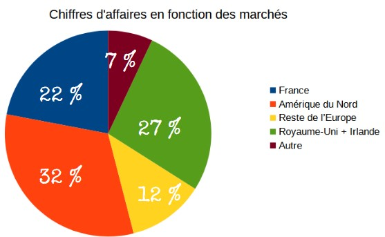

Capgemini
Sommaire
Une rapide présentation
Capgemini est une entreprise multinationale de conseil en technologies, en management et en outsourcing. Elle a été fondée en 1967 en France et compte aujourd'hui plus de 270 000 employés dans plus de 50 pays. Capgemini offre une gamme de services, notamment en matière de conseil en stratégie, consulting, digital, technologie et externalisation. L'entreprise a des bureaux dans de nombreux pays, y compris en France, en Allemagne, aux États-Unis et en Inde.
Capgemini en chiffres
| Chiffre d'affaires | 367M€ |
| Capital Social | 1.3M€ |
| Endettement | 37.7% |
| Nombre de salariés | 270K |
| Présence | 40 pays |
Dommaines de gestion
Approvisionnement
Étant donné que Capgemini offre des services, elle n’a pas besoin de s’approvisionner en matière première. Cependant, les partenariats sont au cœur de son activité puisqu’elle se charge de paramétrer pour les clients les logiciels créés par les éditeurs de logiciels. De cette manière, Capgemini compte pas moins d’une vingtaine de partenariats majeurs dont Adobe, , IBM, Google Cloud ou Amazon
Production
Le service le plus demandé chez Capgemini est celui d’infogérance, consistant à administrer et à assurer la pérennité de tout ou partie du système d’information numérique d’une entreprise. Cela se traduit notamment par de la Tierce Maintenance Applicative, c'est-à-dire s’assurer de garder les progiciels dans un état optimal de fonctionnement, quitte à prendre des responsabilités face aux éventuels problèmes.Ces services sont souvent appliqués via des contrats de 3 à 5 ans avec l’entreprise en question.
Capgemini propose aussi de l’intégration logicielle en implémentant et en configurant les progiciels afin qu’ils correspondent le mieux à ce que l’entreprise attend. Cette tâche est en général rémunérée à la mission ; mission qui peut durer plusieurs mois voire un an suivant la complexité des réglages. Enfin, la firme propose des formations à l’utilisation des outils numériques ainsi que du conseil dans le domaine.
Commerciale
Capgemini segmente sa clientèle en 2 principaux types de clients : les entreprises qui sont intéressées par les services d’intégration ou de maintenance logicielle, et celles qui sont en recherche de conseils pour améliorer leur productivité grâce au numérique. Le ciblage est ainsi différencié : l’une recevra de l’infogérance alors que l’autre sera guidée par le cabinet de conseil de Capgemini.
Capgemini vise une large clientèle, avec une palette de tarifs variable selon la complexité du travail demandé. Toutes les entreprises souhaitant ses services sont concernées, qu’elles soient petites, ou grandes.
Gestion des Ressources Humaines
Capgemini est une entreprise dans l’air du temps, qui essaie notamment d’évoluer vers une égalité des sexes. Ainsi, elle favorise la parité des postes et des salaires avec comme objectif que 30% des postes importants soient occupés par des femmes d’ici 2025. De plus, Capgemini fait partie du Valuable 500, un réseau mondial de dirigeants impliqués dans l’inclusion des personnes handicapées, avec des infrastructures adaptées.
Concernant les salaires, les employés sont bien payés avec des salaires allant de 19 500€ pour une nouvelle recrue, à 57 000€ net par an pour un chef de projet expérimenté. Les conditions de travail offertes sont agréables : ambiance dynamique et professionnelle, horaires flexibles et possibilité de télétravailler. Les employés possèdent 25 à 33 jours de congés par an suivant leur ancienneté.
Finance
Les actionnaires constituent une part importante du financement de l’entreprise. Ainsi, le capital total de Capgemini est constitué de 0.2% d'autofinancement, 6.2% d’actionnaires individuels et 85% d’investisseurs institutionnels. Parmi ces acteurs majeurs, 67.5% sont basés à l’international. Enfin, 8.6% du capital est détenu par les salariés du groupe.

Néanmoins, en fin d’année 2021, Capgemini comptait environ 3,224Md € d'endettement, soit 37,4% des capitaux propres de l’entreprise - ces dernières s’élevant à 8,48Md €. Cela reste convenable pour une entreprise de l’envergure de Capgemini. Aujourd’hui, l’entreprise ne cesse de se diversifier et de s’agrandir. Le dernier gros rachat amical en date est celui d’Altran en 2018, spécialisé dans le conseil en ingénierie, et renommé Capgemini Engineering.
Comptabilité
Comme le veut la loi, les bilans comptables de l’entreprise sont transparents et disponibles directement sur leur site officiel. Capgemini prépare et y publie régulièrement un calendrier prévisionnel témoignant des prochains grands événements de l’entreprise. Ainsi, au troisième trimestre de 2022, Capgemini a empoché près de 5 553 millions d’euros et compte un taux de croissance de 15.7%.
En 2021, elle a dégagé un chiffre d’affaires de 16,8 milliards d’euros. Parmi les différents marchés sur lesquels Capgemini est présente, la France représente près de 22% de son chiffre d'affaires, et l’Amérique du Nord y contribue à hauteur de 32%, témoignant de son rayonnement mondial.
Recherche & Développement
Capgemini prône l’innovation dans le numérique et il lui est alors indispensable d’effectuer un travail de R&D. Elle entreprend de nombreux travaux visant à améliorer et rendre plus complets ses services comme son IA. De même, de nouvelles technologies apparaissent à chaque instant et il est important pour Capgemini de s’y adapter.
Par exemple, un progiciel pourrait se mettre à proposer une nouvelle fonctionnalité, que Capgemini devra apprendre à utiliser, à implémenter et à paramétrer de la façon la plus optimale. C’est un travail d’apprentissage et d’optimisation permanent. L’entreprise met en avant 6 secteurs principaux dans lesquels elle est très active et qu’elle espère révolutionner. Il s’agit de la mobilité et de l’informatique du futur, de la santé, de l’industrie, du data science et du machine learning.